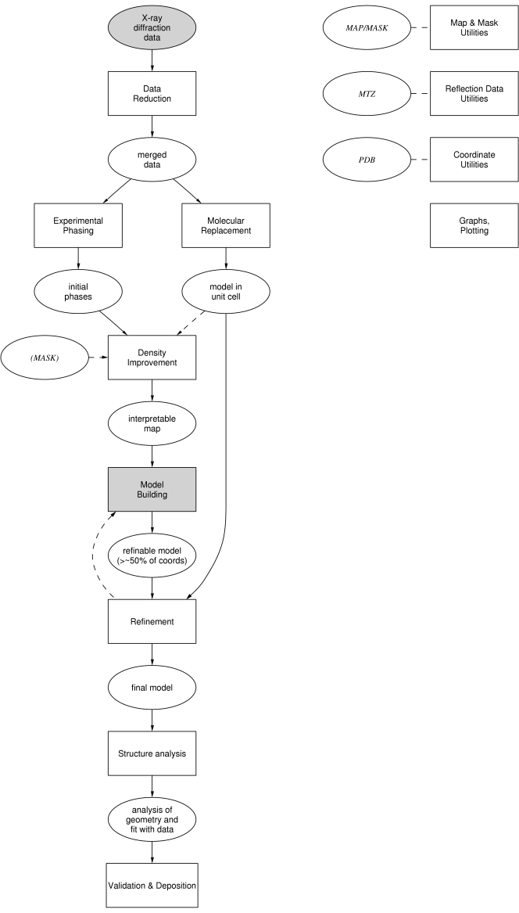

|
CCP4 Roadmaps |
| STAGES IN STRUCTURE DETERMINATION |

|

| diagram created with dot, from the graphviz package |
The rectangular boxes represent stages in the determination of macromolecular structures, including the analysis. The thick-rimmed boxes represent the modules of the CCP4 Graphical User Interface (apart from 'Model Building', which as yet has to be done outside CCP4, indicated by the stippled background of the box).
The ellipsoids represent the input and output to and from the various stages. Some data processing is required before CCP4 programs can be used, hence the stippling of the 'X-ray diffraction data' ellipsoid.
Crystallographic and other information, either directly from CCP4 or from external sources: